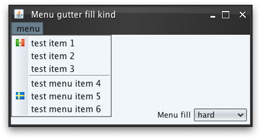

|
Sample code |
import java.awt.*;
import java.awt.event.ActionEvent;
import java.awt.event.ActionListener;
import javax.swing.*;
import org.pushingpixels.substance.api.SubstanceLookAndFeel;
import org.pushingpixels.substance.api.SubstanceConstants.MenuGutterFillKind;
import org.pushingpixels.substance.api.renderers.SubstanceDefaultComboBoxRenderer;
import org.pushingpixels.substance.api.skin.BusinessBlackSteelSkin;
/**
* Test application that shows the use of the
* {@link SubstanceLookAndFeel#MENU_GUTTER_FILL_KIND} client property.
*
* @author Kirill Grouchnikov
* @see SubstanceLookAndFeel#MENU_GUTTER_FILL_KIND
*/
public class MenuGutterFillKindProperty extends JFrame {
/**
* Creates the main frame for <code>this</code> sample.
*/
public MenuGutterFillKindProperty() {
super("Menu gutter fill kind");
setLayout(new BorderLayout());
// create sample menu bar with one menu and a few menu items
JMenuBar jmb = new JMenuBar();
JMenu menu = new JMenu("menu");
String packageName = MenuGutterFillKindProperty.class.getPackage()
.getName();
menu.add(new JMenuItem("test item 1", new ImageIcon(
MenuGutterFillKindProperty.class.getClassLoader().getResource(
packageName.replace('.', '/') + "/flag_mexico.png"))));
menu.add(new JMenuItem("test item 2"));
menu.add(new JMenuItem("test item 3"));
menu.addSeparator();
menu.add(new JMenuItem("test menu item 4"));
menu.add(new JMenuItem("test menu item 5", new ImageIcon(
MenuGutterFillKindProperty.class.getClassLoader().getResource(
packageName.replace('.', '/') + "/flag_sweden.png"))));
menu.add(new JMenuItem("test menu item 6"));
jmb.add(menu);
setJMenuBar(jmb);
JPanel controls = new JPanel(new FlowLayout(FlowLayout.RIGHT));
final JComboBox menuGutterFillCombo = new JComboBox(new Object[] {
MenuGutterFillKind.NONE, MenuGutterFillKind.SOFT,
MenuGutterFillKind.HARD, MenuGutterFillKind.SOFT_FILL,
MenuGutterFillKind.HARD_FILL });
menuGutterFillCombo.setRenderer(new SubstanceDefaultComboBoxRenderer(
menuGutterFillCombo) {
@Override
public Component getListCellRendererComponent(JList list,
Object value, int index, boolean isSelected,
boolean cellHasFocus) {
MenuGutterFillKind mgfk = (MenuGutterFillKind) value;
return super.getListCellRendererComponent(list, mgfk.name()
.toLowerCase(), index, isSelected, cellHasFocus);
}
});
menuGutterFillCombo.setSelectedItem(MenuGutterFillKind.HARD);
menuGutterFillCombo.addActionListener(new ActionListener() {
public void actionPerformed(ActionEvent e) {
// based on the selected item, set the global menu gutter
// fill kind
UIManager.put(SubstanceLookAndFeel.MENU_GUTTER_FILL_KIND,
menuGutterFillCombo.getSelectedItem());
}
});
controls.add(new JLabel("Menu fill"));
controls.add(menuGutterFillCombo);
this.add(controls, BorderLayout.SOUTH);
this.setSize(400, 200);
setLocationRelativeTo(null);
setDefaultCloseOperation(JFrame.EXIT_ON_CLOSE);
}
/**
* The main method for <code>this</code> sample. The arguments are ignored.
*
* @param args
* Ignored.
*/
public static void main(String[] args) {
JFrame.setDefaultLookAndFeelDecorated(true);
SwingUtilities.invokeLater(new Runnable() {
public void run() {
SubstanceLookAndFeel.setSkin(new BusinessBlackSteelSkin());
new MenuGutterFillKindProperty().setVisible(true);
}
});
}
}
The screenshot below shows application frame with menu under the default
MenuGutterFillKind.HARD
fill kind:

The screenshot below shows application frame with menu under the
MenuGutterFillKind.SOFT
fill kind:
|